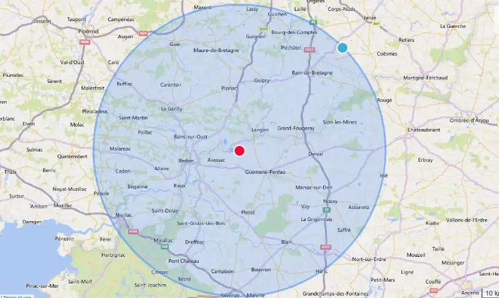

Maçonnerie
Dalle béton, murets, enduits, terrasse.
Petits travaux de bricolage à domicile
J’accompagne les particuliers dans la réalisation de leurs travaux et aménagements extérieurs, lorsqu’ils manquent de temps, de compétence ou simplement d’envie. Un seul interlocuteur de confiance, pour des travaux bien faits, sans stress ni mauvaises surprises. Je propose des services très diversifiés tout en garantissant le même niveau d’exigence et de soin, quel que soit le domaine concerné. Et parce que je travaille chez vous comme chez moi, je n’interviens que sur des travaux que je maîtrise parfaitement.
Demandez votre devis gratuit
Paiement possible en CESU selon prestations

Mes services à Massérac et autour de Redon

Des travaux faits avec soin, comme à la maison
Je réalise des travaux de type multiservices chez les particuliers, avec la même exigence que si c’était chez moi. Je protège les sols, je fais attention à votre intérieur, je nettoie avant de partir. Mon profil de bricoleur et mon expérience dans les travaux publics me permettent de proposer une large gamme de prestations (lien) : petit terrassement, pose de clôtures, création de réseaux enterrés, carport, murs extérieurs, entretien et aménagement. Parce que votre maison est un lieu de vie, je fais attention à chaque détail : respect des lieux, finitions soignées et chantier propre à la fin des travaux.
Ils m'ont fait confiance
★★★★★
Monsieur Daval est très professionnel et fait un travail d'une grande qualité tout en gardant sa bonne humeur et gentillesse malgré la pluie pendant tout le chantier. Merci encore.
— Morej Lgs56★★★★★
Christophe est un super professionnel, réalisation d'une dalle parfaite, chantier très propre, rien à redire!
— Aurel Daviaud★★★★★
Travail excellent aussi bien en espace vert qu'en travaux de pose de clôture et portail.
— Bruno MasettoAvis issus de Google — Voir tous les avis
Ma zone d'intervention autour de Massérac
Je suis Christophe Daval, votre prestataire multiservices à Massérac et autour de Redon.
Avec CJAL, j’ai à cœur de mettre mon expertise à votre service. Depuis plus de 15 ans, j’ai réalisé de nombreux travaux chez moi, en parallèle de mon activité salariée qui m’a également permis d’acquérir de nombreuses compétences techniques. Il y a quelques mois, pour me rapprocher de ma famille, j’ai créé l’entreprise CJAL avec l’idée que chacun doit pouvoir bénéficier de travaux de qualité chez soi.

Pour plus d'informations sur mes services
Vous voulez en savoir plus?